무선설비기사 (2017-10-14 기출문제)
1과목: 디지털 전자회로
1. 정류회로 중 평활회로에서 커패시터 입력형에 비해 인덕터 입력형의 특성으로 옳은 것은?
- 최대 역전압(Peak Inverse Voltage)이 높다.
- 소전류에 적합하다.
- 전압변동률이 양호하다.
- 출력직류전압이 크다.
(정답률: 63%)

2. 다음은 트랜지스터 직렬전압안정회로를 나타내었다. 부하전압을 5[V]로 유지하기 위한 제너다이오드의 항복전압은 얼마인가? (단, 트랜지스터의 베이스-이미터 전압 VBE=0.7[V]이고, 입력전압 Vin=10[V]~20[V]까지 변한다고 가정한다.)
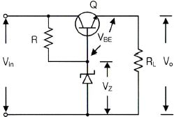
- 5[V]
- 5.7[V]
- 10[V]
- 10.5[V]
(정답률: 75%)
3. 공통 베이스(Common Base) 증폭기 회로에서 컬렉터 전류가 4.9[mA]이고, 이미터 전류가 5[mA]이었을 때 직류전류 증폭률은?
- 0.98
- 1.02
- 1.27
- 1.31
(정답률: 72%)
4. 다음 중 드레인 접지형 FET 증폭기에 대한 특성으로 틀린 것은? (단, FET의 파라미터 Am은 상호 전도도이다.)
- 입력 임피던스는 매우 크다.
- 전압 이득은 약 1이다.
- 출력은 입력과 역위상이다.
- 출력 임피던스는 약 1/Am이다.
(정답률: 73%)
5. B급 푸시풀 증폭기의 최대 직류공급전력은? (단, Im은 최대 콜렉터 전류, Vcc는 공급 전압이다.)
- Im Vcc
- 2 Im Vcc
- Im Vcc/π
- 2 Im Vcc/π
(정답률: 64%)
6. 다음 B급 SEPP(Single-Ended Push-Pull) 증폭기에서 트랜지스터 1개당 최대 전력 손실은 약 몇 [W]인가?
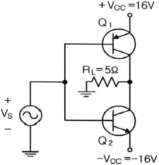
- 1.5[W]
- 2.5[W]
- 3.5[W]
- 4.5[W]
(정답률: 59%)
7. 정궤환(Positive Feedback)을 사용하는 발진회로에서 발진을 위한 궤환루프(Feedback Loop)의 조건은?
- 궤환루프의 이득은 없고, 위상천이가 180°이다.
- 궤환루프의 이득은 1보다 작고, 위상천이가 90°이다.
- 궤환루프의 이득은 1이고, 위상천이가 0°이다.
- 궤환루프의 이득은 1보다 크고, 위상천이가 180°이다.
(정답률: 80%)
8. 다음 그림과 같은 발진회로에서 높은 주파수의 동작에 적절한 발진회로 구현을 위한 리액턴스 조건은 무엇인가?
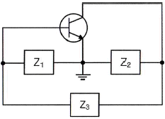
- Z1 = 용량성, Z2 = 용량성, Z3 = 용량성
- Z1 = 유도성, Z2 = 유도성, Z3 = 유도성
- Z1 = 유도성, Z2 = 용량성, Z3 = 용량성
- Z1 = 용량성, Z2 = 용량성, Z3 = 유도성
(정답률: 84%)
9. 다음 중 변조과정에 대한 설명으로 옳은 것은?
- 반송파에 정보신호(음성ㆍ화상ㆍ데이터 등)를 싣는 것을 변조라 한다.
- 변조된 높은 주파수의 파를 반송파라 한다.
- 변조는 소신호로 대전류를 제어하는 것이다.
- 저주파는 음성 신호파를 운반하는 역할을 하므로 피변조파라 한다.
(정답률: 77%)
10. 다음 중 반송파를 제거하는 변조방식은?
- 진폭 변조
- 펄스 변조
- 위상 변조
- 평형 변조
(정답률: 59%)
11. BPSK(Binary Phase Shift Keying) 변조방식의 에러 확률은 QPSK(Quadrature Phase Shift Keying) 변조방식의 에러 확률의 몇 배인가?
- 1/2배
- 1/4배
- 2배
- 4배
(정답률: 65%)
12. 다음 중 불연속 펄스 변조방식의 종류가 아닌 것은?
- PAM(Pulse Amplitude Modulation)
- PNM(Pulse Number Modulation)
- ΔM(Delta Modulation)
- PCM(Pulse Code Modulation)
(정답률: 60%)
13. 다음 그림과 같은 주기적인 펄스파형의 듀티비(Duty Ratio)는 얼마인가? (단, t0=30[μs], T=150[μs])
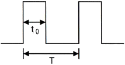
- 10[%]
- 12[%]
- 20[%]
- 22[%]
(정답률: 81%)
14. 다음 그림과 같은 회로의 명칭은?
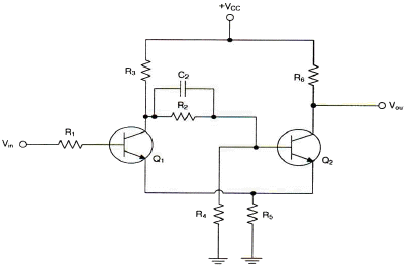
- 슈미트 트리거(Schmitt Trigger) 회로
- 차동증폭회로
- 푸시풀(Push-Pull) 증폭회로
- 부트스트랩(Bootstrap) 회로
(정답률: 76%)
15. 다음 2-out of-5 Code에 해당하지 않는 것은?
- 10010
- 11000
- 10001
- 11001
(정답률: 81%)
16. 8진수 (67)8을 16진수로 바르게 표기한 것은?
- (43)16
- (37)16
- (55)16
- (34)16
(정답률: 80%)
17. 불 대수식
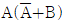
를 간단히 하면?- A
- B
- AB
- A + B
(정답률: 76%)
18. 카운터(Counter)를 이용하여 컨베이어 벨트를 통과하는 생산품의 개수를 파악하려고 한다. 최대 500개의 생산품을 카운트하기 위한 카운트를 플립플롭을 이용 제작할 때 최소한 몇 개의 플립플롭이 필요한가?
- 5
- 7
- 9
- 11
(정답률: 83%)
19. 다음 소자 중에서 n개의 입력을 받아서 제어 신호에 의해 그 중 1개만을 선택하여 출력하는 것은?
- Multiplexer
- Demultiplexer
- Encoder
- Decoder
(정답률: 79%)
20. 다음 그림과 같은 회로의 명칭은?
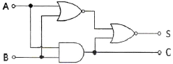
- 동시 회로
- 반동시 회로
- Full Adder
- Half Adder
(정답률: 75%)
2과목: 무선통신 기기
21. 수신 주파수가 850[kHz]이고 국부발진주파수가 1,3⑤[kHz]일 때 영상 주파수는 몇 [kHz]인가?
- 790[kHz]
- 1,020[kHz]
- 1,760[kHz]
- 2,155[kHz]
(정답률: 77%)
22. 정보신호가
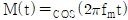
인 정현파를 반송파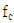
를 사용하여 DSB-TC 변조하는 경우 변조된 신호의 스펙트럼을 모두 나타낸 것은?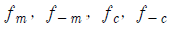
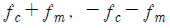
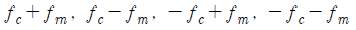
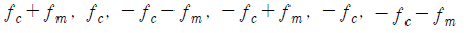
(정답률: 68%)
23. 49[kHz]와 50[kHz]의 버스트(Burst)로 구성된 BFSK(Binary Frequency Shift Keying) 시스템의 대역폭은? (단, 비트율은 2[kbps]이다.)
- 1[kHz]
- 2[kHz]
- 4[kHz]
- 5[kHz]
(정답률: 46%)
24. 다음 중 이진변조에서 M-진 변조로 확장할 때 주파수 효율이 가장 낮은 변조방식은?
- M-진 ASK(Amplitude Shift Keying)
- M-진 FSK(Frequency Shift Keying)
- M-진 PSK(Phase Shift Keying)
- M-진 QAM(Quadrature Amplitude Modulation)
(정답률: 69%)
25. 다음 중 DPSK(Differential Phase Shift Keying) 신호의 복조에 대한 설명으로 틀린 것은?(오류 신고가 접수된 문제입니다. 반드시 정답과 해설을 확인하시기 바랍니다.)
- DPSK 신호의 복조는 동기 검파방식을 사용한다.
- DPSK 신호는 수신기에서 반송파 복구를 하지 않고 복조가 가능하다.
- DPSK 신호에는 위상에 정보를 실어서 송신하므로 위상오차 없이 정확히 검출해야 한다.
- DPSK에서 위상왜곡 영향이 유사할 것으로 가정된 연속된 두 심볼 수신 신호를 곱하는 방법을 사용한다.
(정답률: 64%)
26. 다음 중 PSK(Phase Shift Keying) 변조방식에 대한 설명으로 틀린 것은?
- PSK 복조방식은 FSK(Frequency Shift Keying) 복조방식보다 소요 대역폭이 좁다.
- PSK 복조방식은 비동기 검파방식보다 성능이 3[dB] 정도 S/N비가 개선된다.
- PSK 복조방식은 FSK 복조방식에 비해 경제적이다.
- PSK 복조방식은 동기 검파방식만 지원한다.
(정답률: 54%)
27. 다음 중 PSK(Phase Shift Keying) 변조방식에서 위상상태의 개수가 증가함에 따라 나타나는 현상은 무엇인가?
- 비트율이 감소한다.
- 보오율이 증가한다.
- 데이터율 증가에 대해서는 BER(Bit Error Rate)을 유지하기 위해 SNR(Signal to Noise Ratio)이 증가된다.
- 이득이 증가한다.
(정답률: 74%)
28. 다음 중 QAM(Quadrature Amplitude Modulation)에 대한 설명으로 틀린 것은?
- MASK(Multiple Amplitude Shift Keying)와 MPSK(Multiple Phase Shift Keying)를 결합한 변조방식이다.
- 반송파의 진폭과 위상을 변화시키는 방식이다.
- 16QAM의 경우 성상도에서 신호점이 16개가 발생된다.
- QAM의 레벨의 개수가 많아질수록 전력효율은 높아지나 대역폭 효율은 떨어진다.
(정답률: 76%)
29. 다음 중 Microwave 주파수대에서 폭우의 영향이 가장 크게 나타나는 주파수대는
- 10[GHz]
- 8[GHz]
- 6[GHz]
- 4[GHz]
(정답률: 79%)
30. 다음 중 레이더의 기능에 의한 오차에 속하지 않는 것은?
- 해면반사
- 거리오차
- 방위오차
- 선박 경사에 의한 오차
(정답률: 79%)
31. 다음 중 축전지의 초충전에 대한 설명으로 옳은 것은?
- 축전지를 제조한 후 마지막으로 걸어주는 충전이다.
- 초충전 시 12[V] 정도에서 온도를 급상승시킨다.
- 충전 전류는 10[%] 내외로 한다.
- 충전시간은 70~80시간 정도로 한다.
(정답률: 77%)
32. 다음 중 초크 L 입력형과 콘덴서 C 입력형 정류회로에 대한 비교 설명으로 틀린 것은?
- 콘덴서 C 입력형은 부하 전류의 평균치와 최대치의 차가 크다.
- 콘덴서 C 입력형은 맥동률이 크다.
- 초크 L 입력형은 정류 소자 전류가 연속적이다.
- 초크 L 입력형은 전압 변동률이 작다.
(정답률: 76%)
33. 다음 중 무정전 전원장치(UPS) 방식이 아닌 것은?
- ON-LINE 방식
- OFF-LINE 방식
- Interleaving 방식
- LINE Interactive 방식
(정답률: 80%)
34. 다음 중 가정용 태양전지 시스템의 구성 요소가 아닌 것은?
- PV(Photovoltaic) Array
- Converter
- 발전계량
- 접지
(정답률: 78%)
35. 다음 중 AM 송신기의 전력측정 방법이 아닌 것은?
- 안테나의 실효 저항에 의한 측정
- 볼로미터 브리지에 의한 전력측정
- 의사안테나를 사용하는 방법
- 전구 부하에 의한 방법
(정답률: 76%)
36. 수신기의 성능을 나타내는 요소 중 충실도에 대한 설명으로 옳은 것은?
- 미약 전파 수신 능력
- 혼신 분리 제거 능력
- 원음 재생 능력
- 장시간 일정출력 유지 능력
(정답률: 84%)
37. 무선통신망의 측정 단위로 등방성 안테나(전 방향에 균등한 전파를 방사하는 가상의 안테나)를 기준으로 한 안테나의 상대적 이득 특성 단위를 표시한 것은?
- dBm
- dBi
- dBd
- dBc
(정답률: 81%)
38. 다음 중 급전선의 필요조건으로 적합하지 않은 것은?
- 전송효율이 좋을 것
- 유도방해를 주거나 받지 않을 것
- 송신용의 경우 절연내력이 작을 것
- 급전선의 파동 임피던스가 적당할 것
(정답률: 70%)
39. 브리지형 전파 정류회로에 인가된 교류 입력전압의 최대치가 200[V]일 때 각 다이오드에 걸리는 최대 역전압(Peak Inverse Voltage)은 몇 [V]인가?
- 100[V]
- 200[V]
- 400[V]
- 800[V]
(정답률: 66%)
40. 축전지 극판에 백색 황산연이 생겼을 때 실시하는 충전방식으로 옳은 것은?
- 초충전
- 속충전
- 부동충전
- 과충전
(정답률: 80%)
3과목: 안테나 공학
41. 비유전율이 9이고 비투자율이 1인 매질을 전파하는 전자파의 속도는 자유공간을 전파할 때와 비교하여 약 몇 배의 속도인가?
- 3.33배
- 2.33배
- 1.33배
- 0.33배
(정답률: 83%)
42. 변화하고 있는 자계는 전계를 발생시키고 또 반대로 변화하고 있는 전계는 자계를 발생시키는 사실을 나타내고 있는 것은?
- Maxwell 방정식
- Lentz 방정식
- Poynting 정리
- Laplace 방정식
(정답률: 86%)
43. 전파를 상공에 수직으로 발사하여 0.004초 후에 그 전파가 수신되었다면 전리층의 높이는 약 얼마인가?
- 100[km]
- 300[km]
- 600[km]
- 900[km]
(정답률: 74%)
44. 다음 중 진행파와 반사파가 모두 존재하는 경우는?
- 무한장 급전선
- 정재파비가 1인 급전선
- 정규화 부하 임피던스가 1인 급전선
- 반사계수가 1인 급전선
(정답률: 71%)
45. 다음 중 Trap 정합회로(Stub 정합)를 사용하기 가장 적합한 급전선은?
- 동축케이블 방식
- 차폐 2선식
- 평행 2선식
- 평행 4선식
(정답률: 71%)
46. 다음 중 발룬(Balun)을 사용하는 이유로 옳은 것은?
- 불평형 전류를 흐르지 못하도록 하고 평형형 전류만 흐르도록 하기 위해서이다.
- 안테나의 임피던스를 부정합시키기 위해서이다.
- 안테나의 손실을 줄이고 정재파비를 크게 하기 위해서이다.
- 안테나의 대역폭을 크게 하기 위해서이다.
(정답률: 76%)
47. 다음 중 도파관의 종류가 아닌 것은?
- 구형 도파관
- 원형 도파관
- 타원형 도파관
- 루프형 도파관
(정답률: 70%)
48. 다음 중 도파관의 임피던스 정합 방법으로 적합하지 않은 것은?
- Stub에 의한 정합
- 도파관 창에 의한 정합
- 커플러에 의한 정합
- Q 변성기에 의한 정합
(정답률: 61%)
49. 다음 중 설명이 틀린 것은?
- 정전계와 유도전계가 같아지는 거리는 약 0.16λ이다.
- UHF(Ultra High Frequency)란 파장이 0.1~1[m]인 범위를 말한다.
- 복사전계의 크기는 파장에 비례한다.
- 정전계에 수반하는 자계 성분은 없다.
(정답률: 59%)
50. 다음 중 안테나 파라미터와 관계없는 것은?
- 고유주파수
- 안테나 효율
- 실효고 및 복사저항
- 수신전력
(정답률: 70%)
51. 다음 중 용어에 대한 설명으로 틀린 것은?
- 주엽 : 최대복사 방향 빔패턴
- 부엽 : 주엽 외의 작은 빔패턴
- 전계패턴 : 최대 전계 복사각도 1/2되는 두 점 사이 각도
- 전후방비 : 주엽 전계강도의 최대값과 후방부엽 전계강도의 최대값의 비
(정답률: 73%)
52. 안테나의 구조에 의한 분류 중 극초단파(UHF)용 판상안테나에 속하지 않는 것은? 어느 것인가?
- 슈퍼 턴 스타일(Super Turn Style) 안테나
- 슬롯(Slot) 안테나
- 빔(Beam) 안테나
- 코너 리플렉터(Corner Reflector) 안테나
(정답률: 70%)
53. 다음 중 절대이득을 측정할 수 있는 표준형 안테나로 사용할 수 있는 안테나는?
- 혼(Horn) 안테나
- 웨이브(Wave) 안테나
- 루프(Loop) 안테나
- 롬빅(Rhombic) 안테나
(정답률: 71%)
54. 장ㆍ중파대의 송신 안테나의 접지방식 중 접지저항이 약 5[Ω] 정도이고 중파 방송용 안테나에 주로 사용되는 접지방식으로 가장 적합한 것은?
- 다중 접지
- 가상 접지
- 방사상 접지
- 어스 스크린 접지
(정답률: 72%)
55. 대지면을 완전도체라고 가정하고, 송수신 안테나의 거리가 충분히 멀리 떨어져 있는 경우 수평 편파의 송수신 안테나의 높이를 각각 2배 증가시키면 수신 전계강도의 변화는?
- 변화가 없다.
- 약 1.414배 증가한다.
- 2배 증가한다.
- 4배 증가한다.
(정답률: 63%)
56. 다음 중 선박용 레이더에서 마이크로파를 사용하는 이유로 틀린 것은?
- 광의 특성과 유사하게 직진하기 때문이다.
- 파장이 짧아 안테나를 소형으로 만들 수 있기 때문이다.
- 파장이 짧아 적은 표적에서도 반사가 되기 때문이다.
- 비나 눈에 의한 영향이 적기 때문이다.
(정답률: 78%)
57. MUF(Maximum Usable Frequency)가 5[MHz]일 때 전리층 반사파를 사용하여 통신을 수행하기에 가장 적합한 주파수는?
- 2.125[MHz]
- 4.25[MHz]
- 8.5[MHz]
- 17[MHz]
(정답률: 72%)
58. 전자파가 전리층을 통과하게 되면 지구 자계의 영향으로 편파면이 회전을 하게 되는데 이러한 현상을 무엇이라 하는가?
- 도플러(Doppler) 효과
- 페러데이(Faraday) 회전
- 델린저(Dellinger) 현상
- 룩셈부르크(Luxembourg) 효과
(정답률: 71%)
59. 다음 중 자연잡음인 공전 잡음을 효과적으로 방지하기 위한 대책이 아닌 것은?
- 지향성 안테나 사용
- 수신기의 수신대역폭을 넓히고 선택도를 개선
- 송신 출력을 높여 수신 S/N비를 증대
- 비접지 안테나 사용
(정답률: 70%)
60. 전자파 인체보호 관련 용어 설명 중 전자파흡수율 (SAR)에 대한 설명으로 가장 적합한 것은?
- 전기장 내의 한 점에 있는 단위 양전하에 작용하는 힘
- 생체조직의 단위 질량당 흡수되는 에너지의 비율(W/kg)
- 전자파의 진행 방향에 수직인 단위 면적을 통과하는 전력
- 전자파 인체보호기준에서 정한 전기장의 세기(V/m), 자기장의 세기(A/m), 전력밀도(W/평방미터) 등을 실제 측정
(정답률: 73%)
4과목: 무선통신 시스템
61. 다음 중 입력되는 신호의 주파수가 3.5[GHz], 4.5[GHz]일 때, 제곱의 비선형항만이 고려되는 비선형 소자에서 출력 가능한 신호의 주파수가 아닌 것은?
- 1[GHz]
- 7[GHz]
- 8[GHz]
- 10[GHz]
(정답률: 67%)
62. 50개의 국간을 성형으로 연결하기 위하여 필요한 회선 수는?
- 49개
- 50개
- 51개
- 52개
(정답률: 76%)
63. 전위강하법으로 접지를 측정하여 2[A]이고, 전압계의 지시치가 7[V]라면 접지저항은 몇[Ω]인가?
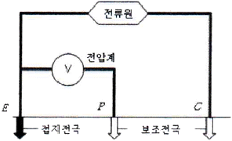
- 3.5[Ω]
- 4.0[Ω]
- 7.0[Ω]
- 21.0[Ω]
(정답률: 77%)
64. 다음 중 비동기 다중화 접속방식인 WCDMA(Wideband Code Division Multiple Access) 방식에 대한 설명으로 옳은 것은?
- Spreading Factor는 심볼의 대역폭을 몇 배의 타임슬롯으로 할당시키는가를 나타내는 인자이다.
- WCDMA OVSF(Orthogonal Variable Spreading Factor) 트리 구조의 기본적인 원리와 특징은 동기식 CDMA와 동일하다.
- 길이가 같은 OVSF코드들 간에 이론적으로 서로 간섭이 없으며, 모든 OFDM(Orthogonal Frequency Division Multiplexing)방식 시스템의 하향링크 다중화의 기본 원리가 된다.
- 같은 주파수를 사용하는 신호라도 길이가 같은 다른 직교코드가 시작점을 일치하여 각각 곱하여졌다면 직교코드의 상호간에 상관도가 1인 특성에 의하여 서로 간섭이 발생하지 않는다.
(정답률: 57%)
65. 다음 중 마이크로웨이브 링크에서 전방향 송신빔을 간섭으로부터 격리 또는 보호하기 위해 통상 중계기 안테나의 전후방비(Front-To-Back Ratio)로 가장 적합한 구간은?
- 5[dB] 이하
- 10 ~ 15[dB]
- 15 ~ 20[dB]
- 20 ~ 30[dB]
(정답률: 60%)
66. 다음 마이크로웨이브 중계 방식 중 펄스부호변조(Pulse Code Modulation)통신 시 S/N비가 가장 좋은 중계 방식은?
- 헤테로다인 중계 방식
- 검파 중계 방식
- 무급전 중계 방식
- 직접 중계 방식
(정답률: 49%)
67. 다음 중 VSAT(Very Small Aperture Terminal)의 특징이 아닌 것은?
- 소형 출력과 소형 안테나를 갖는 위성통신용 지상 장치이다.
- 설비가 간단하며, 고속 데이터 통신용에 사용한다.
- 12~18[GHz] 주파수를 사용, 안테나의 이득이 크다.
- HUB Station을 사용하여 위성과 연결함으로써 VSAT와 VSAT사이의 통신이 가능하다.
(정답률: 63%)
68. 다음 중 와이브로 웨이브 2 (WiBro Wave-II)에서 Down Link의 전송속도 증가를 위하여 사용되는 “동일 주파수와 시간에 2개 이상의 독립 데이터를 2개 이상의 송신 안테나를 이용하여 전송하는 기술”은 무엇인가?
- Adaptive Antenna System
- MMR (Mobile Multi-hop Relay)
- Spatial Multiplexing
- Space-Time Trellis Coding
(정답률: 69%)
69. 스펙트럼 확산통신 시스템 중 직접확산 DS(Direct Sequence) 방식의 특징이 아닌 것은?
- 간섭(재밍)에 강하다.
- 신호 검출이 용이하다.
- 다중경로에 강하다.
- PN부호 발생기가 필요하다.
(정답률: 49%)
70. 한 지점에서 송신한 신호의 전력이 수신 지역에서 6[dB] 감소되어 수신되었다면 수신지점은 송신지점과 비교해 전력이 몇 배 감소한 것인가?
- 4배 감소
- 6배 감소
- 8배 감소
- 64배 감소
(정답률: 76%)
71. 무선랜인 IEEE 802.11b와 Bluetooth는 동일한 대역인 2.4[GHz] ISM (Industrial Scientific Medical) 대역에서 통신을 하고 있다. 두 시스템 간의 충돌 영향을 완화하기 위해 Bluetooth가 채택한 방식은?
- CSMA/CA(Carrier Sense Multiple Access with Collision Avoidance)
- AFH(Adaptive Frequency Hopping)
- CDM(Code Division Multiplexing)
- CSMA/CD(Carrier Sense Multiple Access with Collision Detection)
(정답률: 55%)
72. 다음 중 링크를 경유하는 통신에서 MAC(Media Access Control) 프로토콜이 필요한 이유가 아닌것은?
- 매체를 공유하여 사용하는 경우에 여러 단말 사이의 경합이 불가피하여 조정이 필요하다.
- 매체에서 문제가 발생하여 전송에서 오류가 발생하였을 때 이를 극복하기 위한 방안이 필요하다.
- 매체의 특성에 적합한 경로로 정보가 전달될 수 있도록 하는 방안이 필요하다.
- 매체에서 문제가 발생하여 전송에서 오류가 발생하는 것을 예방하기 위한 방안이 필요하다.
(정답률: 58%)
73. 다음 중 동작을 위해 Sliding Window 기법이 사용되는 프로토콜 기능은?
- 흐름제어(Flow Control)
- 세분화(Segmentation)
- 오류제어(Error Control)
- 동기제어(Syncronization)
(정답률: 74%)
74. 통신 프로토콜의 계층화 개념 중 데이터가 상위계층에서 하위계층으로 내려가면서 데이터에 제어정보를 덧붙이게 되는데 이를 무엇이라 하는가?
- Framing
- Multiplexing
- Encapsulation
- Transmission Control
(정답률: 79%)
75. 다음 중 마스터 스테이션으로부터 슬레이브 스테이션에게 전송할 데이터가 있는지 물어보는 방식은?
- Contention
- Polling
- Selection
- Detection
(정답률: 78%)
76. 우리나라의 LTE(Long Term Evolution) 이동통신시스템에서 한정된 주파수자원을 주어진 시간에 여러 사용자들에 할당하여 기지국과 단말기간의 무선 구간을 연결하는 다중접속방식으로 사용되는 것은? 무엇인가?
- FDMA(Frequency Division Multiple Access)
- TDMA(Time Division Multiple Access)
- CDMA(Code Division Multiple Access)
- OFDMA(Orthogonal Frequency Division Multiple Access)
(정답률: 65%)
77. 다음 중 상세 설계에 포함되어야 할 사항이 아닌 것은?
- 표지 및 목차
- 예선서
- 예정 공정표
- 타당성 조사
(정답률: 59%)
78. 다음 무선망 설계 시 필요한 품질목표 중 사용자가 서비스 접속가능 지력에서 호 시도를 하여 호가 완료될 때까지 통화중단 없이 호가 유지될 수 있는 신뢰성에 대한 확률을 표현하는 것은?
- 통화 커버리지(Call Coverage)
- 서비스 등급(Grade Of Service)
- 통화 품질(Quality of Telephone Call)
- 수신감도(Receiving Sensitivity)
(정답률: 76%)
79. 다음 무선통신시스템 설치 구축공사의 착공 전 검토 사항이 아닌 것은?
- 감리원의 공정별 입회에 대한 확인
- 시공하기 전에 설계도서와 현장의 일치 여부를 확인
- 설계도서에 맞게 장비의 입고 일정과 일치 여부 검토
- 이동통신시스템장비를 작동하는데 필요한 전원설비 및 냉방기 시설 검토
(정답률: 66%)
80. 다음 중 백색 가우시안 잡음의 특징으로 틀린 것은?
- 전 대역에 걸쳐 전력 스펙트럼 밀도가 일정한 크기를 가진다.
- 백색 가우시안 잡음은 신호에 더해지는 형태다.
- 열잡음(Thermal Noise)이 대표적인 백색 가우시안 잡음이다.
- 레일리 분포 특성을 보인다.
(정답률: 77%)
5과목: 전자계산기 일반 및 무선설비기준
81. CPU가 명령문을 수행하는 순서는?
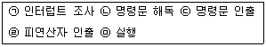
- ㉢-㉠-㉡-㉣-㉤
- ㉢-㉡-㉣-㉤-㉠
- ㉡-㉢-㉣-㉤-㉠
- ㉣-㉢-㉡-㉤-㉠
(정답률: 65%)
82. 주소영역(Address Space)이 1[GB]인 컴퓨터가 있다. 이 컴퓨터의 MAR(Memory Address Register)의 크기는 얼마인가?
- 30[bit]
- 30[Byte]
- 32[bit]
- 32[Byte]
(정답률: 60%)
83. 8비트에 저장된 값 10010111을 16비트로 확장한 결과 값은? (단, 가장 왼쪽의 비트는 부호(Sign)를 나타낸다.)
- 0000000010010111
- 1000000010010111
- 1001011100000000
- 1111111110010111
(정답률: 63%)
84. 다음 중 오류검출과 오류교정까지도 가능한 코드는?
- Hamming Code
- Biquinary Code
- 2-out of-5 Code
- EBCDIC Code
(정답률: 82%)
85. 다음 중 사용자가 단말기에서 여러 프로그램을 동시에 실행시키는 기법은?
- 스풀링(Spooling)
- 다중 프로그래밍(Multi-programming)
- 다중 처리기(Multi-processor)
- 다중 태스킹(Multi-tasking)
(정답률: 63%)
86. 다음 문장에서 설명하는 운영체제의 유형은?
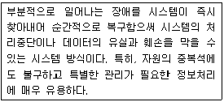
- 시분할 시스템(Time-sharing System)
- 다중 처리(Multi-processing)
- 다중 프로그래밍(Multi-programming)
- 결함허용 시스템(Fault-tolerant System)
(정답률: 71%)
87. 다음 지문에서 설명하고 있는 소프트웨어의 종류는?
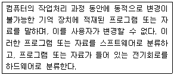
- 펌웨어
- 시스템 소프트웨어
- 응용 소프트웨어
- 디바이스 드라이버
(정답률: 72%)
88. 다음 지문의 괄호 안에 들어갈 용어를 올바르게 나열한 것은?
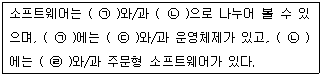
- ㉠ 응용소프트웨어 ㉡ 시스템소프트웨어 ㉢ 유틸리티 ㉣ 패키지
- ㉠ 시스템소프트웨어 ㉡ 응용소프트웨어 ㉢ 유틸리티 ㉣ 패키지
- ㉠ 시스템소프트웨어 ㉡ 유틸리티 ㉢ 응용소프트웨어 ㉣ 패키지
- ㉠ 응용소프트웨어 ㉡ 시스템소프트웨어 ㉢ 패키지 ㉣ 유틸리티
(정답률: 72%)
89. 다음 지문이 설명하고 있는 것은?
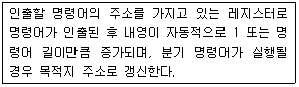
- 기억장치 버퍼 레지스터
- 누산기
- 프로그램 카운터
- 명령 레지스터
(정답률: 70%)
90. 다음 중 마이크로프로그램에 의한 마이크로 오퍼레이션의 동작으로 틀린 것은?
- 주기억 장치에서 명령어 인출하는 동작
- 오퍼랜드의 유효 주소를 계산하는 동작
- 지정된 연산을 수행하는 동작
- 다음 단계의 주소를 결정하는 동작
(정답률: 63%)
91. 전파법에서 규정한 “특정한 주파수의 용도를 정하는 것”은 어떤 용어에 대한 정의인가?
- 주파수분배
- 주파수할당
- 주파수지정
- 주파수편차
(정답률: 61%)
92. 다음 중 준공검사를 받지 아니하고 운용할 수 있는 무선국에 속하지 않는 것은?
- 공해 지역에 개설한 무선국
- 국가안보를 위하여 개설하는 무선국
- 외국에서 운용할 목적으로 개설한 육상이동지구국
- 30와트 이상의 무선설비를 시설하는 어선의 선박국
(정답률: 71%)
93. 의료용 전파응용설비는 고주파출력이 몇 와트 초과인 경우 과학기술정보통신부의 허가를 받아야 하는가?
- 10[W]
- 20[W]
- 30[W]
- 50[W]
(정답률: 66%)
94. 거짓으로 적합성평가를 받은 후 그 적합성평가의 취소처분을 받은 경우에 해당 기자재는 얼마 이내의 기간 동안 적합성평가를 받을 수 없는가?
- 1년
- 2년
- 3년
- 5년
(정답률: 77%)
95. 다음 중 무선설비 설계변경 및 계약금액 조정관련 감리업무 내용으로 틀린 것은?
- 감리사는 설계변경 지시내용의 이행가능 여부를 당시의 공정, 자재수급 상황 등을 검토하여 확정하고, 만약 이행이 불가능하다고 판단될 경우에는 그 사유와 근거자료를 첨부하여 시공자에게 보고하여야 한다.
- 발주자가 설계변경 도서를 작성할 수 없을 경우에는 설계변경 개요서만 첨부하여 설계변경지시를 할 수 있다.
- 설계변경 요청은 발주자 혹은 시공자 제안으로 할 수 있다.
- 감리사는 설계변경 등으로 인한 계약금액의 조정을 위한 각종서류를 시공자로부터 제출받아 검토한 후 감리업자 대표자에게 보고하여야 한다.
(정답률: 62%)
96. 무선설비 기성 및 준공검사 처리절차가 올바르게 나열된 것은?
- 검사원 및 감리조서 - 검사원 임명 - 검사 실시 - 검사결과 통보 및 검사조서 - 발주자 결재 - 대가지급
- 검사원 임명 - 검사원 및 감리조서 - 검사 실시 - 검사결과 통보 및 검사조서 - 발주자 결재 - 대가지급
- 검사원 임명 - 검사원 및 감리조서 - 발주자 결재 - 검사 실시 - 검사결과 통보 및 검사조서 - 대가지급
- 검사원 및 감리조서 - 검사원 임명 - 발주자 결재 - 검사 실시 - 검사결과 통보 및 검사조서 - 대가지급
(정답률: 76%)
97. “방송통신기자재 등의 적합성 평가에 관한 고시”에 의한 용어 정의 중에서 “기본모델과 전기적인 회로ㆍ구조ㆍ기능이 유사한 제품군으로 기본모델과 동일한 적합성평가번호를 사용하는 기자재”를 무엇이라 하는가?
- 기본모델
- 변경모델
- 동일모델
- 파생모델
(정답률: 83%)
98. 방송통신기자재 등의 적합성평가 개별 적용기준이 아닌 것은?
- 유선분야
- 무선분야
- 전자파 인체보호분야
- 전자파 장해방지분야
(정답률: 64%)
99. DSC(Digital Selective Calling)의 수신메시지는 정보를 읽기 전까지 저장되고, 수신 후 몇 시간이 지난 후에 삭제될 수 있어야 하는가?
- 12시간
- 24시간
- 48시간
- 72시간
(정답률: 80%)
100. 수신설비가 충족하여야 하는 조건이 아닌 것은?
- 수신주파수의 운용범위 이내일 것
- 내부잡음이 적을 것
- 감도는 높은 신호입력에서도 양호할 것
- 선택도가 크고 명료도가 충분할 것
(정답률: 72%)